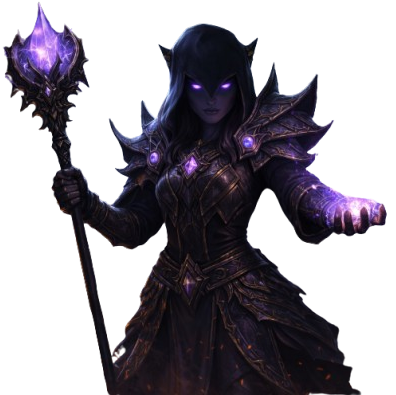
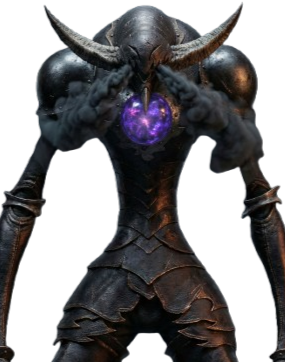
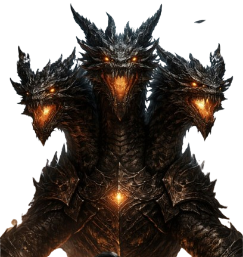

Arakh não nasceu com esse nome.
Durante anos, ele foi apenas mais um monge silencioso, perdido entre cânticos e jejuns em um
templo esquecido.
Mas enquanto os outros buscavam iluminação, Arakh escutou algo diferente: o Vazio.
Ele abandonou o mundo, a carne e o medo.
Onde deveria haver fé, cresceu um abismo.
Hoje, Arakh não luta por poder ou vingança — ele luta para apagar tudo.
ZAYRA (FEITIÇEIRA)

Zayra foi criada como filha indesejada, temida desde o primeiro choro.
Sua magia surgiu cedo, selvagem e cruel, punindo quem tentava quebrá-la.
Queimada como bruxa, jogada nas sombras, ela não morreu.
A dor virou feitiço. O medo virou arma.
Zayra não conjura magia — ela cobra o preço do mundo.
ELSA (RAINHA DO LOFO)
Elsa um dia foi humana.
Traída, afogada e esquecida nas águas escuras de um pântano sem nome.
Mas o lodo não a devorou. Ele a acolheu.
O ódio fermentou na lama, moldando chifres, presas e promessas.
Hoje, Elsa reina entre névoa e ossos, arrastando viajantes para o mesmo destino que o dela.
DRAZHUL (REI MASMORRAS)
Drazhul foi um rei temido em vida.
Em morte, tornou-se eterno.
Enterrado sob suas próprias masmorras, ele despertou quando o último prisioneiro morreu
gritando seu nome.
Sem carne, sem misericórdia, apenas vontade.
Drazhul governa corredores de ossos e correntes, onde a morte nunca é libertação.
GALAND (MANDAMENTO)

Galand acreditava que o mundo precisava de ordem absoluta.
Quando os deuses se calaram, ele se proclamou sua voz.
Cada pecado virou sentença. Cada dúvida, execução.
A fé o endureceu até não sobrar humanidade.
Galand não mata por ódio — ele cumpre.
XARDUN (O LADRÃO)
Xardun sempre viveu nas sombras, roubando para sobreviver.
Mas um dia, roubou algo que não devia: um artefato antigo, faminto por caos.
O poder não o matou — o tornou pior.
Agora, Xardun rouba segredos, vidas e destinos.
Nada está seguro quando ele sorri.
EBALF ( REI ORC)
Ebalf não nasceu com esse nome. Durante 20 anos, ele foi apenas "Oitenta e Nove", um escravo
nas minas de sal e, depois, nas
arenas da opulenta cidade humana de Aurelia.
Aurelia era famosa por sua beleza e cultura, mas tudo era construído sobre o sangue de orcs
e outras raças.
Mas Ebalf não morreu. Ele transformou seu ódio em disciplina.
HIDRA (O PECADO)

Hidra não nasceu.
Ela surgiu quando o primeiro desejo proibido foi aceito.
Cada cabeça representa um pecado, crescendo quanto mais o mundo falha.
Cortá-la só a fortalece.
Hidra não quer conquistar reinos — ela quer ser alimentada.